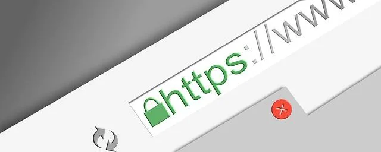

We believe security software like Kicksecure needs to remain Open Source and independent. Would you help sustain and grow the project? Learn more about our 14 year success story and maybe DONATE!
Server Security GuideAdvanced DocumentationConfiguration FilesPrevious page: Server Security GuideIndex page: Advanced DocumentationNext page: Configuration FilesTransport Layer Security (TLS)

The Broken Certificate Authority System
Introduction
Transport Layer Security (TLS) is a cryptographic protocol designed to provide secure communications over a computer network. TLS has replaced its deprecated predecessor, Secure Sockets Layer (SSL), and is intended to enforce privacy and data integrity between two or more communicating computer applications. [1] TLS is utilized for a host of online activities, such as web browsing, email, instant messaging, and VOIP applications. It ensures the client (like a web browser) is securely communicating with a server (such as kicksecure.com), meaning the connection is private, authenticated, and reliable. For a detailed overview of the TLS design, refer to this Wikipedia entry.
Use of TLS encryption is only as good as its keys.
Some TLS issues are not directly TLS issues, but rather issues with the certificate authorities that are trusted by default by operating systems, web browsers, and other applications.
(Self-signed) SSL certificates using Certificate Pinning are unaffected by issues with certificate authorities.
Compromised Certificate Authorities
Little trust should be placed in the public TLS certificate authority (CA) system, since it relies on a third party correctly establishing the authenticity of certificates. The Snowden leaks confirmed that CAs were a weak point targeted by the IC, allowing for Man-in-the-middle attacks if the CAs were either compromised or cooperative.
If/once a single CA is subverted, the security of the entire system is lost, and potentially all entities relying on the trust of the compromised CA are affected. [2]
Examples of CA security breaches include (ordered roughly by severity of the breach):
- Ars Technica: DigiNotar issues rogue HTTPS certificate "for *.*.com and *.*.org, which would allow someone in possession of the certificates to perform man-in-the-middle attacks for almost any site with a .com or .org domain". [3],
- Comodo issued rogue HTTPS certificate for Google, Yahoo, Skype, Firefox Add-Ons, and live.com [4],
- Ars Technica: "Symantec employees fired for issuing rogue HTTPS certificate for Google",
- Ars Technica: Symantec again,
- Wired: Turktrust issued rogue HTTPS certificate for Google
- the list goes on and on
Untrustworthy Certificate Authorities
Quote wikipedia:
As of 24 August 2020, 147 root certificates, representing 52 organizations, are trusted in the Mozilla Firefox web browser, 168 root certificates, representing 60 organizations, are trusted by macOS, and 255 root certificates, representing 101 organizations, are trusted by Microsoft Windows.
Rhetorical questions:
- Why were these organizations given the power to sign certificates for any domain on the internet?
- How were they vetted?
Research exercise for the reader:
- Have previously maliciously acting certificate authorities been removed from operating systems' and web browsers' default list of trusted certificates?
This video Let's Encrypt with Dane by Geoff Huston, APNIC summarizes it well.
Censorship
https://community.letsencrypt.org/t/dnr-online-ru-certificate-was-revoked/48809
Domain Verification Insecurity
Many TLS certificates are, during their initial certification, verified over an insecure channel. For example, Let's Encrypt is a very popular [5] certificate authority that provides free TLS certificates. Let's Encrypt often uses the ACME protocol HTTP-01 challenge to verify domain owners are really owners of the domain and authorized to request TLS certificates for their domain name. Most websites initially signing up for a free Let's Encrypt TLS certificate are verified by Let's Encrypt connecting to these websites over the insecure, unencrypted HTTP port 80. [6] Other TLS certificate authorities also use the ACME protocol. The ACME HTTP-01 challenge is vulnerable to man-in-the-middle attacks. [7] As a result, the initial root anchor is insecure.
https://letsencrypt.org/2020/02/19/multi-perspective-validation.html
HTTP Public Key Pinning
To fix these issues, HTTP Public Key Pinning (HPKP) was invented but unfortunately deprecated later because, quote:
[8]Due to HPKP mechanism complexity and possibility of accidental misuse, browsers deprecated and removed HPKP support in favor of Certificate Transparency and its
Expect-CTheader.
Certificate Transparency
While Certificate Transparency might allow for faster detection, it does not prevent maliciously issued certificates such as through a malicious or hacked certificate authority.
Key Pinning
HTTP Public Key Pinning (HPKP) was deprecated but Google is still using key pinning.
- https://datatracker.ietf.org/doc/html/rfc7469
- https://www.infoq.com/news/2023/08/android-chrome-key-pinning/
- https://security.googleblog.com/2023/08/making-chrome-more-secure-by-bringing.html
Hardcoded Key Pinning
The browser Chromium and Chrome still pin public key hashes for Google properties. [9] However, this functionality isn't available to most websites.
DANE
DANE (DNS-based Authentication of Named Entities) would be a huge improvement because it does not depend on any certificate authorities but only on the website's domain registrar. Unfortunately, no (mainstream) web browser has implemented DANE and it seems unlikely that DANE will be implemented.
- Web Browsers:
- Firefox:
- Mozilla created a Firefox feature for Use
DNSSEC/DANE chain stapled *into TLS handshake in certificate chain
validation, started working on it but later the ticket was
closed as
wontfix. - There was a DNSSEC/DANE Validator Firefox add-on, but the developers decided to stop development and support after struggling and failing to implement the DNSSEC/TLSA Validator extension for Firefox Quantum (57+). This is worth further research.
- Mozilla created a Firefox feature for Use
DNSSEC/DANE chain stapled *into TLS handshake in certificate chain
validation, started working on it but later the ticket was
closed as
- Chromium based:
- Chromium and Chrome had DNSSEC support (which is a prerequisite for DANE TLSA), but it was removed.
- DNSSEC Checker chrome(ium) add-on but does it check DANE?
- Firefox:
- E-mail servers:
- Ironically [10] often have better DANE support (for
example
postfix).
- Ironically [10] often have better DANE support (for
example
- E-mail clients:
- Unfortunately, the author is not aware of any e-mail clients making use of DANE.
- Alternative e-mail user to e-mail server encryption: E-mail servers
have the ability to implement user to e-mail server encryption through
providing an
onionservice. That is because e-mail fetching protocols (POP, IMAP) as well as mail submission protocols (SMTP) can be tunneled throughonion. Web-mail obviously also works great overonion. That is because the e-mail fetching server (such as for exampledovecot) or e-mail submission server (for exampledovecot) "do not care" how connections arrive at their listening ports. Transporting e-mails from users to e-mail servers is one thing and doable with reasonable effort. Sending e-mails torecipient@example.onionformat addresses however is a different topic.
certbotimplemented--reuse-key[11] which helps to simplify the process by which website owners can add DANE to their website or e-mail server.
TLS Attacks
A significant number of attacks have been demonstrated against the SSL/TLS protocol in the recent past, including: [12]
- BEAST attack: violation of same origin policy constraints.
- ChangeCipherSpec injection attack: a specially crafted handshake forces the use of weak keyring material, allowing decryption and modification of traffic in transit.
- Cross protocol attacks: servers are attacked by exploiting their support of obsolete, insecure SSL protocols to leverage attacks on connections using up-to-date protocols.
- Heartbleed: private keys are stolen from servers, allowing anyone to read the memory of protected systems.
- POODLE attack: padding attacks which reveal the contents of encrypted messages.
- Protocol downgrade: web servers are tricked into negotiating connections with earlier versions of TLS that are insecure.
- RC4 attack: recovery of plain text relying on the RC4 cipher suite.
- Renegotiation attack: plaintext injection attacks via the hijacking of the https connection.
- TLS Compression (CRIME attack): session hijacking of web sessions via recovery of secret authentication cookies.
- Truncation attack: victim logout requests are blocked so the user remains logged into a web service.
- Unholy PAC attack: URLs are exposed when a user attempts to reach a TLS-enabled web link.
- The ROBOT Attack: the return of a 19-year-old vulnerability that allows performing RSA decryption and signing operations with the private key of a TLS server.
Mitigation
TODO: expand
A non-comprehensive list of mitigation techniques to reduce TLS-based risks:
- CAA policy
- Certificate Transparency Log Monitor:
- self-hosted such as Cert Spotter
- third-party hosted such as by sslmate, cloudflare, facebook
- onion: Tor onion services (
.onion) which are encrypted Tor to Tor ("end-to-end encryption") can be used as an alternative to TLS. Unfortunately both client and server require to run Tor. See also Non Anonymous Onion Encryption and NAT Traversal.
Power Abuse
Footnotes
https://smallstep.com/blog/everything-pki/#trustworthiness
https://hexatomium.github.io/2020/10/17/001.html
https://scotthelme.co.uk/revocation-checking-is-pointless/
- https://en.wikipedia.org/wiki/Transport_Layer_Security
- https://en.wikipedia.org/wiki/Certificate_authority#CA_compromise
- DigiNotar issues rogue HTTPS certificate for Google
- Comodo
- Quote Let's Encrypt homepage:
A nonprofit Certificate Authority providing TLS certificates to 260 million websites.
- https://letsencrypt.org/docs/challenge-types/#http-01-challenge
- https://security.stackexchange.com/questions/229050/is-the-acme-http-01-challenge-secure-against-mitms
- * https://www.theregister.com/2017/10/30/google_hpkp/ * https://www.zdnet.com/article/google-chrome-is-backing-away-from-public-key-pinning-and-heres-why/
- * https://www.chromium.org/Home/chromium-security/education/tls#TOC-Certificate-Pinning * https://www.imperialviolet.org/2011/05/04/pinning.html * https://security.googleblog.com/2011/08/update-on-attempted-man-in-middle.html
- One would expect web browsers with more users, supposedly more developers and more funding to be able to implement such an important security feature faster.
- https://github.com/certbot/certbot/pull/5901
- https://en.wikipedia.org/wiki/Transport_Layer_Security#Attacks_against_TLS/SSL